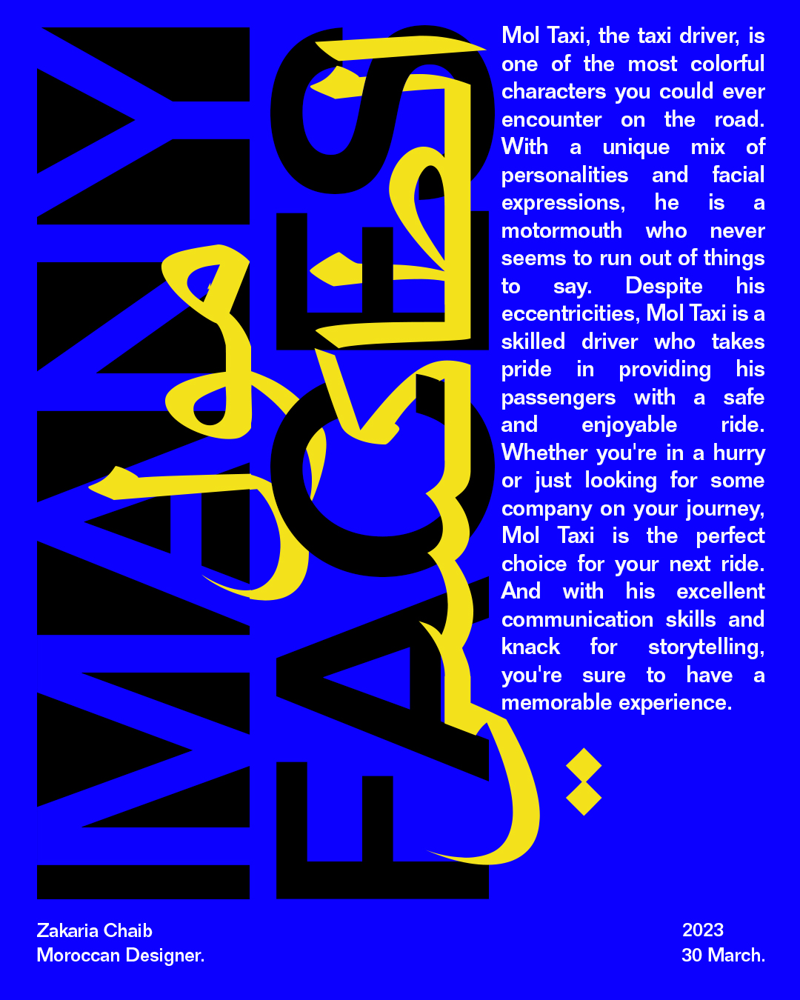
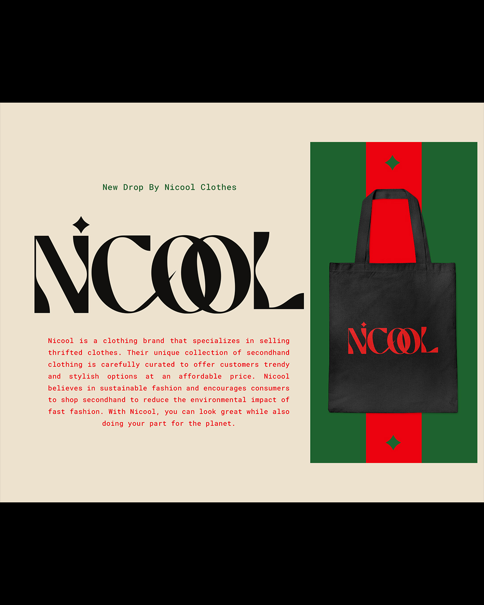
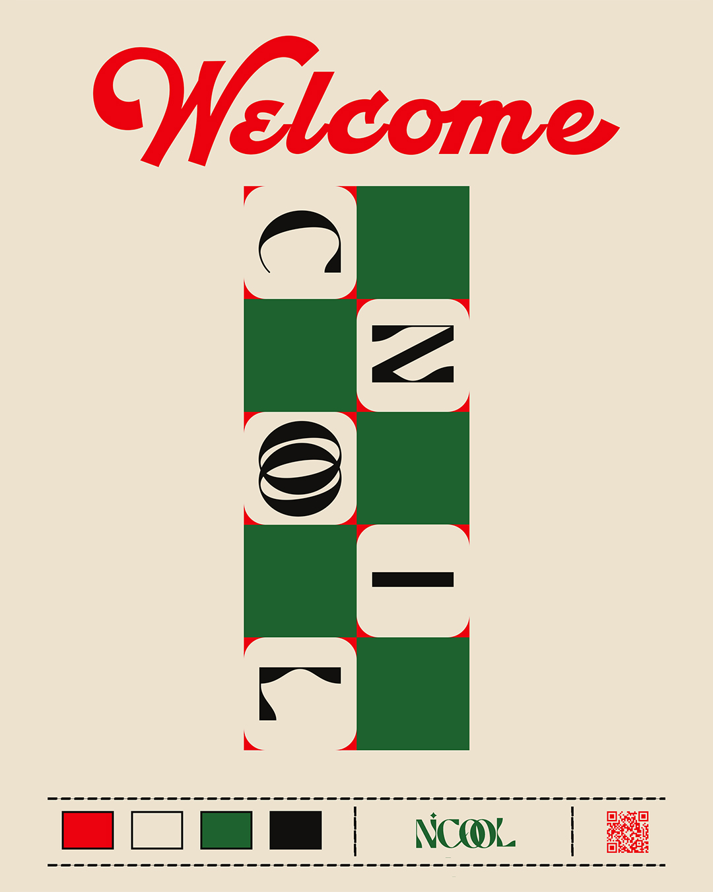

____________________________________________
Many Faces
Many faces are inspired by the multiple personalities and faces that you can encounter in a taxi. One of those individuals is the taxi driver, who exhibits spontaneity in speech and discusses various topics with different opinions. All of these experiences can be found in one place: the taxi, specifically with Mol Taxi.


____________________________________________
Nicool
Nicool is a clothing brand that specializes in selling thrifted clothes. Their unique collection of secondhand clothing is carefully curated to offer customers trendy and stylish options at an affordable price. Nicool believes in sustainable fashion and encourages consumers to shop secondhand to reduce the environmental impact of fast fashion. With Nicool, you can look great while also doing your part for the planet.